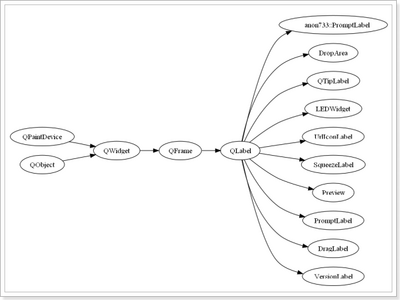
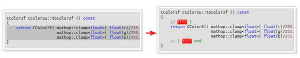
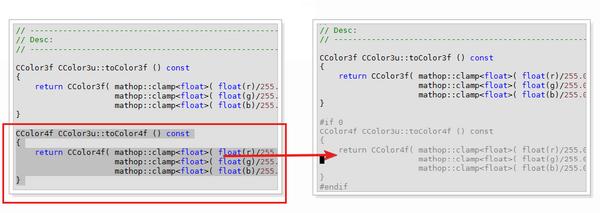

Intro
The exUtility is the base scripts in ex-plugins. It including functions, global variable settings, mappings and commands.
The exUtility separate to two scripts, one in plugin directory, and the other one in autoload directory. Also user can configure some of the settings in _vimrc.
Variables
ex_plugin_registered_bufnames
ex_plugin_registered_bufnames is a variable let user input its plugin window buffer name into it, so that the window will be recognized as a register-plugin-window, and the edit file will not opened in that window to prevent unexpect error.
let g:ex_plugin_registered_bufnames = ["-MiniBufExplorer-","__Tag_List__","\[Lookup File\]", "\[BufExplorer\]"]
ex_plugin_registered_filetypes
ex_plugin_registered_filetypes is a variable let user input its plugin window filetype into it, so that the window will be recognized as a register-plugin-window, and the edit file will not opened in that window to prevent unexpect error.
let g:ex_plugin_registered_filetypes = ["ex_plugin","ex_project","taglist","nerdtree"]
ex_usr_name
ex_usr_name will used the name you give as the author name, and fill it in the author column when you use exUtility#PutHeader() function to put a head title for a file.
let g:ex_usr_name = "Wu Jie"
ex_default_langs
ex_default_langs will let the user input a list of the languages as the default languages when start a new project. The languages you input will link to the language maps, which includes all filetype mappings to that languages. For example, the languages ‘cpp’ will have the filetype list: [‘c++’, ‘cc’, ‘cp’, ‘cpp’, ‘cxx’, ‘h’, ‘H’, ‘h++’, ‘hh’, ‘hp’, ‘hpp’, ‘hxx’, ‘inl’, ‘ipp’ ]. You can check all the file type mappings in autoload/exUtility.vim, at the define s:ex_exvim_lang_map. If you want to add your own mappings, you need to call the function exUtility#AddLangMap and exUtility#ResetLangMap in your .vimrc.
let g:ex_default_langs = ['c', 'cpp', 'c#', 'java', 'shader', 'python', 'vim', 'uc', 'math', 'wiki', 'ini', 'make', 'sh', 'batch', 'debug' ]
ex_cscope_langs
ex_cscope_langs let user setup the language so that cscope will parse them by their file types.
let g:ex_cscope_langs = ['c', 'cpp', 'shader', 'asm' ]
ex_todo_keyword
the variable will record giving words as todo keyword, which will have todo highlight. Similar like word TODO in comments.
let g:ex_todo_keyword = 'NOTE REF EXAMPLE SAMPLE CHECK'
ex_ctags_cmd
this variable is designed to let the user input the name of ctags programme manually. Cause the command of ctags may be different in different platform, if nothing was set, the exVim will check the executable list below in order to set the variable:
- exuberant-ctags
- exctags
- ctags
- ctags.exe
- tags
ex_comment_lable_keyword
the variable will record giving words as comment lable keyword, which will have exCommentLable highlight.
let g:ex_comment_lable_keyword = 'DELME TEMP MODIFY ADD KEEPME DISABLE '
let g:ex_comment_lable_keyword .= 'DEBUG CRASH DUMMY UNUSED TESTME '
let g:ex_comment_lable_keyword .= 'HACK OPTME HARDCODE REFACTORING DUPLICATE REDUNDANCY '
Here are a example of ex_todo_keyword and ex_comment_lable_keyword in the code:

ex_toolkit_path
By default, exVim install the toolkit folder in the path $EX_DEV/exVim/toolkit. But you can change this path to your own place. To change the path, you need to set ex_toolkit_path variable in .vimrc, and copy the toolkit folder to that path.
let g:ex_toolkit_path = $EX_DEV.'/exVim/toolkit'
ex_auto_hl_cursor_word
if ex_auto_hl_cursor_word set to 1, exVim will use ex_SynHLTemp syntax highlight color to highlight the word under current cursor when cursor holds.
let g:ex_auto_hl_cursor_word = 1
Commands
:HL{1-4} [{pattern}]
Highlight a {pattern} with ½/¾ color. If the {pattern} is empty, it will remove the highlight of last one. You can set syntax highlight of each number by overwrite default highlight of ex_SynHL1 to ex_SynHL4. Also the highlight color of higher number will cover the lower one if they highlights same word/pattern.
:Up[date] [{args}]
Update exVim project files. This command will call quick_gen_project_{…}.(bat\|sh). Use <TAB> to check possible arguments. If no arguments given, it will update all project files.
Note: if there is not quick_gen_project_{…}.(bat\|sh) under the project working directory, exVim will list several project types let user choose.
:QC[opy] {args}
Copy the quick_gen_project{…}.(bat\|sh) file from toolkit/(bash\|batch)/quick_gen_project{…}.(bat\|sh) to the project working directory. Use <TAB> to check possible arguments.
:GV {class-name}
Draw the class hierarchy graphic by the name user gives and save the picture in .vimfiles.hierarchies\SymbolName.png
Note: you need to install tool Graphviz
:GVP {class-name}
Similar like :GV command, but draw only hierarchy of the parent classes for {class-name} you give.
:GVC {class-name}
Similar like :GV command, but draw only hierarchy of the children classes for {class-name} you give. Here is a example of drawing hierarchy by :GV in qt-4.5.0 project.

:[range]SHL
convert the highlight of the source code in visual block into html. If no range gvien, it will convert the whole file. The converted html file will saved in .vimfiles.temp_src_highlight.txt.html.
Note: you need to install src-highlite.
Note: if you define the path of the web browser you are using in g:exES_WebBrowser, after the convert, the command will use the browser you defined to open the html automatically.
Note: if you got blank page in web-browser after execute the command, that means you failed. It is probably you didn’t copy the language setup files into the src-highlite share directory. So copy %EX_DEV%\exVim\toolkit\src-highlight\ex\ to your src-highlite share directory. in win32 it could be: %EX_DEV%\tools\GnuWin32\share\source-highlight.
:[range]MK {args}
Mark a visual block of code with the {args} you give, as showed below:

:LINE
The command will put a 86 words long line in the line current cursor in. Here is the command scripts.
command LINE call exUtility#PutLine(86, '-')
You can change to other style or add other commands by copying and modifying the code above. For example you want 14 dot (‘.’) line, you write:
command LINE call exUtility#PutLine(14, '.')
:[range]NS {args}
Put a namespace pair between a visual block like the code below:
// #########################
namespace NS_NAME {
// #########################
visual block
...
...
visual block
// #########################
} // end namespace NS_NAME
// #########################
Note: the NS_NAME in the code is the {args} you input
:NSS {args}
Similar like :NS command, but put only namespace header.
:NSE {args}
Similar like :NS command, but put only namespace tail.
:HEADER
Put a header at the beginning of a file you edit, the header like the code below:
// ======================================================================================
// File : exVim.txt
// Author : Wu Jie
// Last Change : 04/19/2009 | 16:43:03 PM | Sunday,April
// Description :
// ======================================================================================
Note: The content of the “Author” will be the text defined in g:ex_usr_name. Once you have a header in your file, you run this command again, it will only update the “Last Change: ” line.
:SEP
Put a separator under the cursor line, as showed below:
// ========================================================
//
// ========================================================
Note: The separator help user define a name for a block of codes, also separte two defferent group of codes.
Note: Put a note under the cursor line, as showed below:
// ############################################################################
// Note:
// ############################################################################
Note: The note marks a block to write note info.
:DEF
Put a define under the cursor line, as showed below:
// ------------------------------------------------------------------
// Desc:
// ------------------------------------------------------------------
Note: The define indicates the code below is a definition.
:DEC
Put a declaration under the cursor line, as showed below:
///////////////////////////////////////////////////////////////////////////////
// class
//
// Purpose:
//
///////////////////////////////////////////////////////////////////////////////
Note: The declaration indicates the code below is a class declaration.
:MAIN
Put a simple main function under the cursor line, as showed below:
int main( int argc, char* argv[] )
{
}
Note: This help start a project for testing quickly.
:CLASS {class-name}
:STRUCT {struct-name}
Put a class/struct with constructor and destructor, as showed below:
///////////////////////////////////////////////////////////////////////////////
// class CTest
//
// Purpose:
//
///////////////////////////////////////////////////////////////////////////////
class CTest
{
public:
// internal typedef
typedef CTest self_t;
public:
// con/de-structor
CTest ();
virtual ~CTest ();
public:
// copy constructor
CTest ( const self_t& _copy );
self_t& operator = ( const self_t& _copy );
}; // end class CTest
Note: This help quick create a class/struct.
Mappings
<F9>
vnoremap <unique> <F9> :call exUtility#InsertRemoveExtend()<CR>
This map help insert/remove ‘\’ at the end of the line. It is useful when writing large block of macro define code in c/cpp.
<F12>
vnoremap <unique> <F12> :call exUtility#InsertIFZero()<CR>
nnoremap <unique> <F12> :call exUtility#RemoveIFZero()<CR>
When you want to insert/remove #if 0, #endif between a visual block of codes, use this map. The picture below shows how it work:

Note: you want to remove a #if 0, #endif block, you need to move your cursor in it then press
Note: you can remove a #if 0, #endif block with #else. The #else will not be remove directly,instead it will be comment out as: “// XXX #else XXX”. The picture shows how it work:

<leader><tab>
nnoremap <unique> <silent><Leader><Tab> :call exUtility#SwitchBuffer()<CR>
When you want to move cursor quickly between edit window and last ex-plugin window, use this map. (I’m em… too lazy to type
<leader><esc>
nmap <unique> <silent><Leader><ESC> :call exUtility#SwitchBuffer()<CR><ESC>
When your cursor are in edit window, and you want to close last ex-plugin window you are in without move the cursor to it then press
Note: you have multiple ex-plugin window, and you use
ctrl-<right>
ctrl-<left>
nnoremap <unique> <silent> <C-Right> :call exUtility#GotoBuffer('next')<CR>
nnoremap <unique> <silent> <C-Left> :call exUtility#GotoBuffer('prev')<CR>
These two maps will process bn and bp command in a quick way.
ctrl-<tab>
nnoremap <unique> <silent> <C-Tab> :call exUtility#SwapToLastEditBuffer()<CR>
When you want to swap between two edit buffers, use this map, it is similar like the ctrl-tab operation in visual studio and other text editors.
<leader>bd
nnoremap <unique> <Leader>bd :call exUtility#Kwbd(1)<CR>
The exVim assume there is always at least one edit window exists. When you try to close a buffer in edit window, since the gVim’s :q method will close the buffer with the window, the exVim will loose a edit window at the end, and this will cause uncontrollable windows composition problem. So in exVim, the rule #1 is always use the map below to close a edit buffer. The function is come from VimTip #1119: How to use Vim like an IDE, with a little bit modification to work with ex-plugin window.
Note: Check section Known Issues for more details.
<alt-1>
<alt-2>
<alt-3>
<alt-4>
<alt-0>
nnoremap <unique> <silent> <a-1> :call exUtility#Highlight_Normal(1)<CR>
vnoremap <unique> <silent> <a-1> :call exUtility#Highlight_Visual(1)<CR>
nnoremap <unique> <silent> <a-2> :call exUtility#Highlight_Normal(2)<CR>
vnoremap <unique> <silent> <a-2> :call exUtility#Highlight_Visual(2)<CR>
nnoremap <unique> <silent> <a-3> :call exUtility#Highlight_Normal(3)<CR>
vnoremap <unique> <silent> <a-3> :call exUtility#Highlight_Visual(3)<CR>
nnoremap <unique> <silent> <a-4> :call exUtility#Highlight_Normal(4)<CR>
vnoremap <unique> <silent> <a-4> :call exUtility#Highlight_Visual(4)<CR>
nnoremap <unique> <silent> <a-0> :call exUtility#HighlightCancle(0)<CR>
Sometimes you want to highlight a word temporarily, these for mappings will help you highlight a word or a visual block. And you can easily turn off the highlight by moving cursor to the highlighted word, and highlight it again.
Note: it is similar with highlight command :HL{1-4}.
Note: alt-0 will remove all 4 highlights.
Note: Check section Tips And Tricks to see how to substitute highlighted words quickly.
<leader>1
<leader>2
<leader>3
<leader>4
<leader>0
nnoremap <unique> <silent> <Leader>0 :call exUtility#HighlightCancle(0)<CR>
nnoremap <unique> <silent> <Leader>1 :call exUtility#HighlightCancle(1)<CR>
nnoremap <unique> <silent> <Leader>2 :call exUtility#HighlightCancle(2)<CR>
nnoremap <unique> <silent> <Leader>3 :call exUtility#HighlightCancle(3)<CR>
nnoremap <unique> <silent> <Leader>4 :call exUtility#HighlightCancle(4)<CR>
Cancle the highlight manually.
Note: <leader>0 will remove all 4 highlights.
<leader>gv
nnoremap <unique> <silent> <Leader>gv :call exUtility#ViewInheritsImage()<CR>
The map below will use current word as a class name, process and draw a class hierarchy picture saved in .vimfiles.hierarchies\SymbolName.png, then open it by a predefined picture viewer tool.
Note: you need to install tool Graphviz
Note: you need to create inherits file in .vimfiles directory first. This will be done during project update by using :Up[date] command
Note: you need to define g:exES_ImageViewer, for example:
let g:exES_ImageViewer = 'd:\exDev\IrfanView\i_view32.exe'
<leader>mk
vnoremap <unique> <Leader>mk :MK
nnoremap <unique> <Leader>mk :call exUtility#RemoveSpecialMarkText() <CR>
This map will run :MK commmand between a visual block, and if you input some text, it will mark the block with the text like:
// MARK DELME {
for (int i = 0; i < 20; ++i )
{
...
...
...
}
// } MARK DELME end
And you can remove the mark by use the map again in the marked code block.
<leader>ve
nnoremap <unique> <leader>ve :call exUtility#EditVimEntry ()<CR>
The map can help you open the vimentry file of current project for editing.
Custom Highlights
Some times you need to custom highlight by your self, you have to write a function in _vimrc named g:ex_CustomHighlight and overwrite highlights of exUtility there. Here is a sample of highlights:
function g:ex_CustomHighlight() " <<<
" ========================================================
" exUtility
" ========================================================
hi ex_SynHL1 gui=none guibg=LightCyan term=none cterm=none ctermbg=LightCyan
hi ex_SynHL2 gui=none guibg=LightMagenta term=none cterm=none ctermbg=LightMagenta
hi ex_SynHL3 gui=none guibg=LightRed term=none cterm=none ctermbg=LightRed
hi ex_SynHL4 gui=none guibg=LightGreen term=none cterm=none ctermbg=LightGreen
hi ex_SynSelectLine gui=none guibg=#bfffff term=none cterm=none ctermbg=LightCyan
hi ex_SynConfirmLine gui=none guibg=#ffe4b3 term=none cterm=none ctermbg=DarkYellow
hi ex_SynObjectLine gui=none guibg=#ffe4b3 term=none cterm=none ctermbg=DarkYellow
hi link ex_SynError Error
hi link ex_SynFold Comment
hi link ex_SynFileName Statement
hi link ex_SynLineNr LineNr
hi link ex_SynNormal Normal
hi ex_SynTransparent gui=none guifg=background term=none cterm=none ctermfg=DarkGray
hi ex_SynSearchPattern gui=bold guifg=DarkRed guibg=LightGray term=bold cterm=bold ctermfg=DarkRed ctermbg=LightGray
hi ex_SynTitle term=bold cterm=bold ctermfg=DarkYellow gui=bold guifg=Brown
hi ex_SynJumpMethodS term=none cterm=none ctermfg=Red gui=none guifg=Red
hi ex_SynJumpMethodG term=none cterm=none ctermfg=Blue gui=none guifg=Blue
hi link ex_SynJumpSymbol Comment
hi exCommentLable term=standout ctermfg=DarkYellow ctermbg=Red gui=none guifg=LightYellow guibg=Red
" ========================================================
" exMacroHighlight
" ========================================================
hi exMacroDisable term=none cterm=none ctermfg=DarkGray gui=none guifg=DarkGray
hi link cCppOut exMacroDisable
hi exMH_GroupNameEnable term=bold cterm=bold ctermfg=DarkRed ctermbg=LightGray gui=bold guifg=DarkRed guibg=LightGray
hi exMH_GroupNameDisable term=bold cterm=bold ctermfg=Red ctermbg=DarkGray gui=bold guifg=DarkGray guibg=LightGray
hi link exMH_MacroEnable cPreProc
hi link exMH_MacroDisable exMacroDisable
" ========================================================
" exProject
" ========================================================
hi exPJ_TreeLine gui=none guifg=DarkGray term=none cterm=none ctermfg=Gray
hi exPJ_SynDir gui=bold guifg=Brown term=bold cterm=bold ctermfg=DarkRed
hi exPJ_SynFile gui=none guifg=Magenta term=none cterm=none ctermfg=Magenta
hi exPJ_SynSrcFile gui=none guifg=Blue term=none cterm=none ctermfg=Blue
hi exPJ_SynHeaderFile gui=none guifg=DarkGreen term=none cterm=none ctermfg=DarkGreen
hi exPJ_SynErrorFile gui=none guifg=Red term=none cterm=none ctermfg=Red
" ========================================================
" exCScope
" ========================================================
hi exCS_SynQfNumber gui=none guifg=Red term=none cterm=none ctermfg=Red
endfunction " >>>
Also, it is recommended to add your own highlights or highlights from other plugins in this function. Because the function will be called when colorscheme changed, and as I known, you have to reset your highlights everytime you change a colorscheme, or you will loose them. So write highlights in this function help you solve the problem.
Here is another example of my third part plugin highlights in my rc:
function g:ex_CustomHighlight()
" ========================================================
" ShowMarks
" ========================================================
" For marks a-z
hi clear ShowMarksHLl
hi ShowMarksHLl term=bold cterm=none ctermbg=LightBlue gui=none guibg=LightBlue
" For marks A-Z
hi clear ShowMarksHLu
hi ShowMarksHLu term=bold cterm=bold ctermbg=LightRed ctermfg=DarkRed gui=bold guibg=LightRed guifg=DarkRed
" For all other marks
hi clear ShowMarksHLo
hi ShowMarksHLo term=bold cterm=bold ctermbg=LightYellow ctermfg=DarkYellow gui=bold guibg=LightYellow guifg=DarkYellow
" For multiple marks on the same line.
hi clear ShowMarksHLm
hi ShowMarksHLm term=bold cterm=none ctermbg=LightBlue gui=none guibg=SlateBlue
" ========================================================
" MiniBufExplorer
" ========================================================
" for buffers that have NOT CHANGED and are NOT VISIBLE.
hi MBENormal ctermbg=LightGray ctermfg=DarkGray guibg=LightGray guifg=DarkGray
" for buffers that HAVE CHANGED and are NOT VISIBLE
hi MBEChanged ctermbg=Red ctermfg=DarkRed guibg=Red guifg=DarkRed
" buffers that have NOT CHANGED and are VISIBLE
hi MBEVisibleNormal term=bold cterm=bold ctermbg=Gray ctermfg=Black gui=bold guibg=Gray guifg=Black
" buffers that have CHANGED and are VISIBLE
hi MBEVisibleChanged term=bold cterm=bold ctermbg=DarkRed ctermfg=Black gui=bold guibg=DarkRed guifg=Black
" ========================================================
" TagList
" ========================================================
" TagListTagName - Used for tag names
hi MyTagListTagName term=bold cterm=none ctermfg=Black ctermbg=DarkYellow gui=none guifg=Black guibg=#ffe4b3
" TagListTagScope - Used for tag scope
hi MyTagListTagScope term=NONE cterm=NONE ctermfg=Blue gui=NONE guifg=Blue
" TagListTitle - Used for tag titles
hi MyTagListTitle term=bold cterm=bold ctermfg=DarkRed ctermbg=LightGray gui=bold guifg=DarkRed guibg=LightGray
" TagListComment - Used for comments
hi MyTagListComment ctermfg=DarkGreen guifg=DarkGreen
" TagListFileName - Used for filenames
hi MyTagListFileName term=bold cterm=bold ctermfg=Black ctermbg=LightBlue gui=bold guifg=Black guibg=LightBlue
endfunction